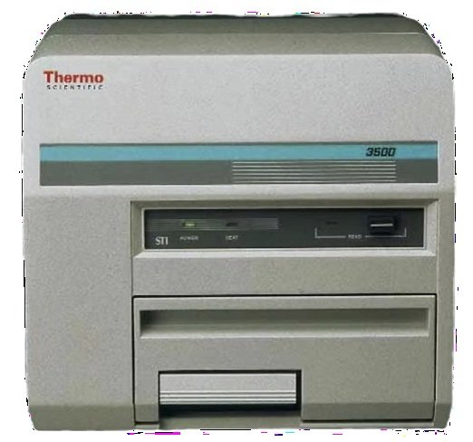
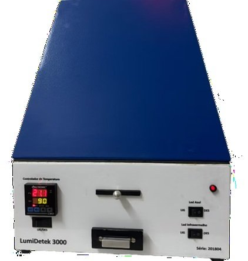
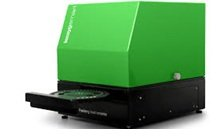

LDRDLaboratório de Dosimetria Retrospectiva e Datação
LDRDLaboratório de Dosimetria Retrospectiva e Datação
Dosimetria, datação e caracterização de materiais.
Infraestrutura multiusuária do CIDIN, DEN/UFPE.
Pesquisa em dosimetria e datação
O LDRD integra o GDOIN, no Departamento de Energia Nuclear da UFPE, e reúne infraestrutura para a preparação de amostras e a análise de materiais de interesse arqueométrico, geológico e geomorfológico.
O laboratório desenvolve e apoia pesquisas em dosimetria retrospectiva, datação por luminescência e ressonância paramagnética eletrônica (EPR), além da caracterização de materiais.
As atividades incluem análises por fluorescência de raios X, o desenvolvimento de metodologias de datação e aplicações de termoluminescência (TL) e luminescência opticamente estimulada (OSL).
Conhecer a instrumentação
Coordenação e equipe
Docentes, pesquisadores, técnicos e estudantes atuam no preparo de amostras, na aquisição de dados e na interpretação dos resultados.
- Coordenação
- Profa. Dra. Viviane Khoury Asfora
- Vice-coordenação
- Dra. Arícia Ravane Pereira da Cruz
Instalações
e equipamentos
Preparação de amostras, dosimetria e datação. Conheça os ambientes e a instrumentação do Laboratório de Dosimetria Retrospectiva e Datação.
Ampliar foto
Da preparação
à medida.
Em aproximadamente 30 m², o LDRD reúne três salas destinadas à recepção, ao armazenamento e à preparação de amostras, à aquisição de dados e à realização de medidas.
Estrutura de preparação
Bancadas, peneiras, estufa e forno para tratamento térmico dão suporte ao preparo das amostras antes das análises.
Medidas de
luminescência
Leitoras para dosimetria por termoluminescência (TL) e luminescência opticamente estimulada (OSL), utilizadas em estudos de doses absorvidas e datação.


Ampliar fotoHarshaw 3500
Thermo Fisher Scientific
Medidas dosimétricas por termoluminescência (TL).


Ampliar fotoLumideteck 3000
Leitora OSL
Determinação de doses absorvidas e estudos de datação por luminescência opticamente estimulada.

Lexyg Smart
Freiberg Instruments
Um sistema de leitura para as duas técnicas: termoluminescência e luminescência opticamente estimulada.
A composição
dos materiais
A fluorescência de raios X (XRF) permite a caracterização química elementar de materiais. O laboratório dispõe de instrumentação de bancada e portátil.
- µXRF ARTAX Bruker
- Análise química elementar rápida e não destrutiva, com aplicações em estudos geológicos, ambientais e de materiais.
- ProSpector LE Elvatech
- Analisador portátil para medidas in situ e identificação de elementos químicos em aplicações de campo.
 Ampliar foto
Ampliar foto
 Ampliar foto
Ampliar foto
Radiação ambiental
e espectrometria gama
O detector de germânio hiperpuro (HPGe) é empregado na estimativa da radiação ambiental associada às amostras de datação.
O sistema Canberra, com multicanal e acessórios, permite a identificação e a quantificação de radionuclídeos por espectrometria gama de alta resolução.
Detector HPGe Canberra
Uso multiusuário
O LDRD integra o CIDIN e recebe pesquisadores da UFPE e de outras instituições, mediante solicitação e aprovação da coordenação.
Solicitação
Preencha o formulário com as informações do projeto e das análises pretendidas.
Avaliação técnica
A coordenação analisa a metodologia, a viabilidade, o cronograma e a demanda existente.
Confirmação e agendamento
Após a aprovação, a equipe informa a data, o horário e os procedimentos necessários.
Execução das análises
Os ensaios são realizados pela equipe capacitada do laboratório, com possibilidade de acompanhamento pelo solicitante.
Fale com o LDRD
Entre em contato para informações sobre análises, preparo de amostras e solicitações de uso.
Localização
Departamento de Energia Nuclear, UFPEAv. Prof. Luiz Freire, 1000, Recife, PE